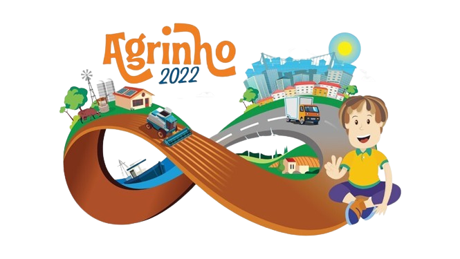

Da plenitude dos campos aos horizontes fervilhantes das cidades, há um caminho que se estende além das fronteiras geográficas, atravessando os limites da experiência humana. É a jornada da transformação, onde a transição do campo para a cidade se torna um manifesto de oportunidades, um convite para colher os frutos do progresso e da evolução. Nos campos, sob o vasto céu azul, a vida floresce em harmonia com a natureza. É onde as mãos ágeis dos agricultores cultivam a terra com dedicação e cuidado, nutrindo as sementes do futuro. Cada colheita é um testemunho da paciência e da perseverança, uma celebração da abundância que a terra generosamente oferece. No entanto, os campos são também um espelho da mudança, onde as tradições se mesclam com as inovações do século XXI. 
O Programa Agrinho é um conjunto de ações de Educação e de Promoção Social, destinado a todos aqueles que atuam na educação e comunidade em geral. Criado em 1995 no Estado do Paraná, o Programa Agrinho surgiu da necessidade de orientar trabalhadores rurais quanto ao uso adequado de defensivos agrícolas.